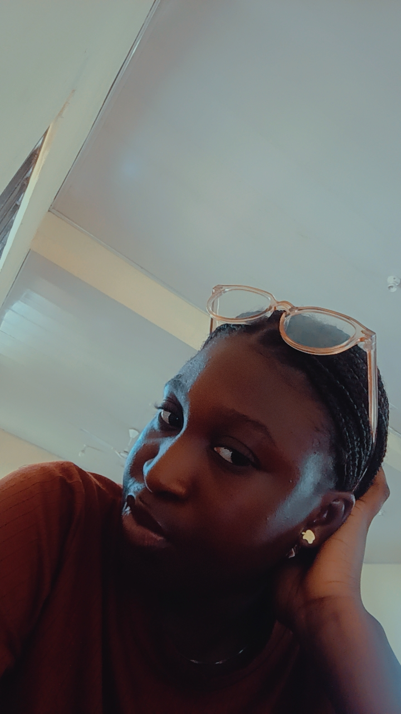

My name is Walton-Micah Favour, A computer science student and an aspiring Software developer. I am a student who is passionate about technology, connecting it to real life and building useful digital solutions.
I'm Walton-Micah Favour, currently I am a 300 level Computer Science student, schooling in Bayelsa Medical University.
I am interested in tech and learning new things, also I'm open to developing skills in computer science and how it can be used to solve real life problems especially in the health sector.
I've always been in love with health, I have plans of linking my computer science skills to health, therefore I have alot to learn, improve, develop, and be well grounded. I believe with hardwork, consistency, and the help of God I will become an expert.
Currently I registered with CamConafr2026 CYBERSECURITY AND ME CONFERENCE 2026 to attend there summit next month.
Currently I registered with Cisco Networking Academy for an HTML course. View Course